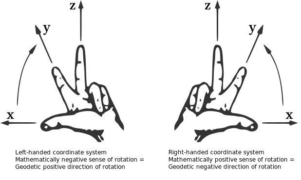

import ifcopenshell
import ifctruss
import pandas as pdGetting Started
This guide will help you to get started with IfcTruss
Installation
The only thing you need to install IfcTruss is Python itself. The minimum Python version required is 3.11.
pip install ifctrussFor more information, see Installation
Tutorial
Here, we will show you how to use this library. First import the following library.
Build
To construct an IFC from scratch, we will utilize the build function of ifctruss. For this aim, we need first to create three DataFrame’s with information regarding the nodes, bars, and point loads:
nodes = pd.DataFrame(
{
"Node": pd.Series([2, 1, 3, 4], dtype=int),
"Coordinate_X": pd.Series([0, 0, -4e3, -4e3], dtype=float),
"Coordinate_Y": pd.Series([0, 0, 0, 0], dtype=float),
"Coordinate_Z": pd.Series([3e3, 0, 3e3, 6e3], dtype=float),
"Translational_X": pd.Series([0, 1, 1, 1], dtype=bool),
"Translational_Y": pd.Series([1, 1, 1, 1], dtype=bool),
"Translational_Z": pd.Series([0, 1, 1, 1], dtype=bool),
}
)
nodes| Node | Coordinate_X | Coordinate_Y | Coordinate_Z | Translational_X | Translational_Y | Translational_Z | |
|---|---|---|---|---|---|---|---|
| 0 | 2 | 0.0 | 0.0 | 3000.0 | False | True | False |
| 1 | 1 | 0.0 | 0.0 | 0.0 | True | True | True |
| 2 | 3 | -4000.0 | 0.0 | 3000.0 | True | True | True |
| 3 | 4 | -4000.0 | 0.0 | 6000.0 | True | True | True |
bars = pd.DataFrame(
{
"Bar": pd.Series([1, 2, 3], dtype=int),
"Start_node": pd.Series([2, 2, 2], dtype=int),
"End_node": pd.Series([1, 3, 4], dtype=int),
"Cross-sectional_area": pd.Series([1e3, 1e3, 1e3], dtype=float),
"Modulus_of_elasticity": pd.Series([1e3, 1e3, 1e3], dtype=float),
}
)
bars| Bar | Start_node | End_node | Cross-sectional_area | Modulus_of_elasticity | |
|---|---|---|---|---|---|
| 0 | 1 | 2 | 1 | 1000.0 | 1000.0 |
| 1 | 2 | 2 | 3 | 1000.0 | 1000.0 |
| 2 | 3 | 2 | 4 | 1000.0 | 1000.0 |
point_loads = pd.DataFrame(
{
# fmt: off
"Point_Load": pd.Series([1,], dtype=int,),
"Node": pd.Series([2,], dtype=int,),
"Force_X": pd.Series([100e3,], dtype=float,),
"Force_Y": pd.Series([0,], dtype=float,),
"Force_Z": pd.Series([-100e3,], dtype=float,),
# fmt: on
}
)
point_loads| Point_Load | Node | Force_X | Force_Y | Force_Z | |
|---|---|---|---|---|---|
| 0 | 1 | 2 | 100000.0 | 0.0 | -100000.0 |
Important is that the column names are the same as in this tutorial, if not, the build function will not recognize the information in the DataFrame’s. The right-hand rule is used for the coordinate system.

model = ifctruss.build(nodes=nodes, bars=bars, point_loads=point_loads)type(model)ifcopenshell.file.fileThat’s it, now you got your ifc! You can also save it to disk.
model.write("tutorial.ifc")
Tip
IfcOpenShell provides other cool features you can use instead of simply saving the ifc model to the hard drive. See the documentation of IfcOpenShell for further examples.
To view the created ifc file, click here.
Build using spreadsheet format ods and xlsx
There are many other way’s to create a DataFrame that is possible with pandas. One of them is through .ods/.xlsx spreadsheet files. For this, this library provides some helper functions. First install the optional dependencies for ods and xlsx. Subsequently, create a .ods/xlsx template file through this function:
ifctruss.save_ods_template(ods_path="tutorial.ods")ifctruss.save_xlsx_template(xlsx_path="tutorial.xlsx")Now you can change in your spreadsheet application the values in the rows or create new rows. Don’t change the column name!
model = ifctruss.build_from_ods(ods_path="tutorial.ods")model = ifctruss.build_from_xlsx(xlsx_path="tutorial.xlsx")type(model)ifcopenshell.file.fileView
So now you got your ifc file. However, it is really difficult to view your ifc file in a text editor and understand the information from the ifc file regarding your truss model. For this aim, there is the view function from ifctruss.
model = ifcopenshell.open("tutorial.ifc")dfs = ifctruss.view(model)dfs.nodes| Node | Coordinate_X | Coordinate_Y | Coordinate_Z | Translational_X | Translational_Y | Translational_Z | |
|---|---|---|---|---|---|---|---|
| 0 | 0B1vdFdYn6OAtmCzta63Fv | 0.0 | 0.0 | 3000.0 | False | True | False |
| 1 | 20teRywIv32PIVE_QfcH5$ | 0.0 | 0.0 | 0.0 | True | True | True |
| 2 | 386TUURITCQgK4gvU3ZUev | -4000.0 | 0.0 | 3000.0 | True | True | True |
| 3 | 0jpZm3fSf68vqfLl5AXCjn | -4000.0 | 0.0 | 6000.0 | True | True | True |
dfs.bars| Bar | Start_node | End_node | Cross-sectional_area | Modulus_of_elasticity | |
|---|---|---|---|---|---|
| 0 | 2WXZhASeL2vgX6m7R1Fz4m | 0B1vdFdYn6OAtmCzta63Fv | 20teRywIv32PIVE_QfcH5$ | 1000.0 | 1000.0 |
| 1 | 0sDI9H53fBhP4Qiq7QSKzj | 0B1vdFdYn6OAtmCzta63Fv | 386TUURITCQgK4gvU3ZUev | 1000.0 | 1000.0 |
| 2 | 1nr3Q4pkDEjeG6YjaSgwtj | 0B1vdFdYn6OAtmCzta63Fv | 0jpZm3fSf68vqfLl5AXCjn | 1000.0 | 1000.0 |
dfs.point_loads| Point_Load | Node | Force_X | Force_Y | Force_Z | |
|---|---|---|---|---|---|
| 0 | 0hodc_yBv7sByAX4IJNWYZ | 0B1vdFdYn6OAtmCzta63Fv | 100000.0 | 0.0 | -100000.0 |
Voilà! You can view your data in DataFrame’s.
Solve
With ifctruss it is also possible to solve your truss model! Simply do:
ifctruss.solve(model)And now view the result:
dfs = ifctruss.view(model, result_group=True)dfs.displacments| Node | Displacement_X | Displacement_Y | Displacement_Z | |
|---|---|---|---|---|
| 0 | 0B1vdFdYn6OAtmCzta63Fv | 214.814815 | 0.0 | -195.833333 |
dfs.forces| Node | Force_X | Force_Y | Force_Z | |
|---|---|---|---|---|
| 0 | 20teRywIv32PIVE_QfcH5$ | 0.000000 | 0.0 | 65277.777778 |
| 1 | 386TUURITCQgK4gvU3ZUev | -53703.703704 | 0.0 | 0.000000 |
| 2 | 0jpZm3fSf68vqfLl5AXCjn | -46296.296296 | 0.0 | 34722.222222 |
dfs.normal_forces| Bar | Normal_force | Type_of_normal_force | |
|---|---|---|---|
| 0 | 2WXZhASeL2vgX6m7R1Fz4m | -65277.777778 | Compressive force |
| 1 | 0sDI9H53fBhP4Qiq7QSKzj | 53703.703704 | Tensile force |
| 2 | 1nr3Q4pkDEjeG6YjaSgwtj | 57870.370370 | Tensile force |
dfs.theory_type'FIRST_ORDER_THEORY'dfs.is_linearTruemodel.write("tutorial-with-resutls.ifc")To view the created ifc file, click here.